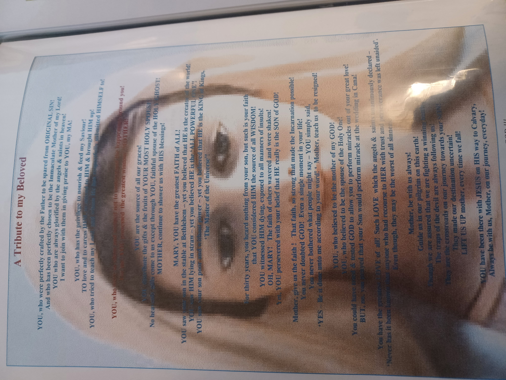

Our Mission
The mission of the LOM is the personal sanctification of its member developed through prayers and apostolic works.
By following Blessed Mother''s virtues, each member develops and deepens his personal relationship with the God the Father, Lord Jesus Christ, and the Holy Spirit. .
Tribute to Blessed Mother
